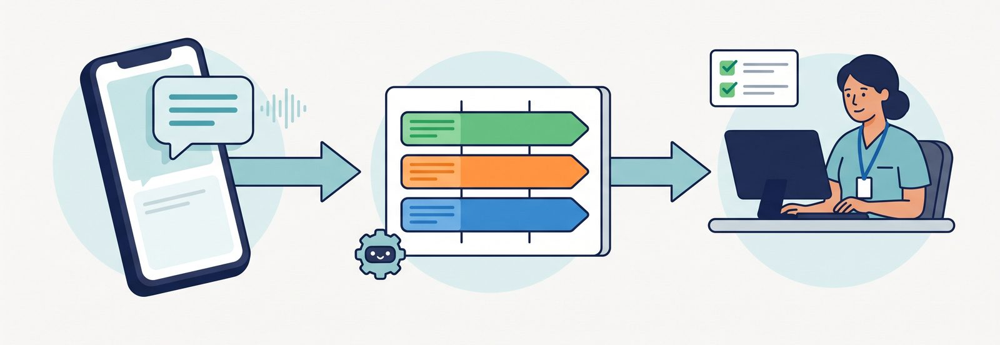

分類と通知を仕組みに。返信は人が行う
在宅医療のクリニックには、患者さんのご家族・介護施設・薬局・ケアマネージャーなど、さまざまな方から毎日多くの問い合わせが入ります。5つのクリニックを運営するおひさま会では、1日に100件前後の問い合わせが発生します。
以前は問い合わせの内容や対応状況が管理システム内に閉じていて、「いま誰が対応しているのか」「もう終わったのか」がリアルタイムで分からない状態でした。結果として、同じ問い合わせに2人が対応してしまったり、逆に誰も対応していなかったりという事態が起きていました。
電話応対そのものをボットに置き換える話ではありません。内容の仕分けと担当への通知を仕組みにし、判断と返信は人が行うためのものです。

「問い合わせ対応の"見える化"によって、チーム全体の安心感が大きく変わった」— 現場スタッフの声です。
おひさま会が自院で内製し、運用している実例をもとに、考え方や進め方をお伝えします。まずは手順書を読むだけでも構いません。